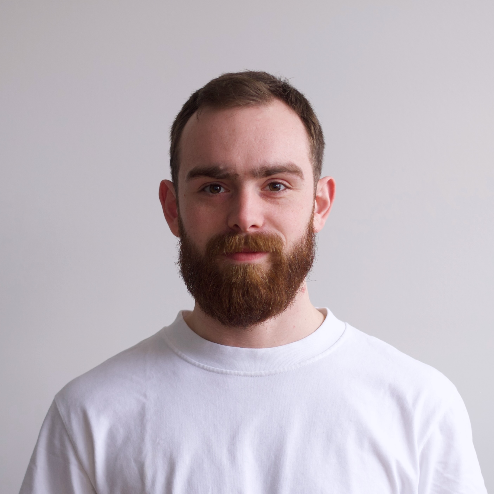
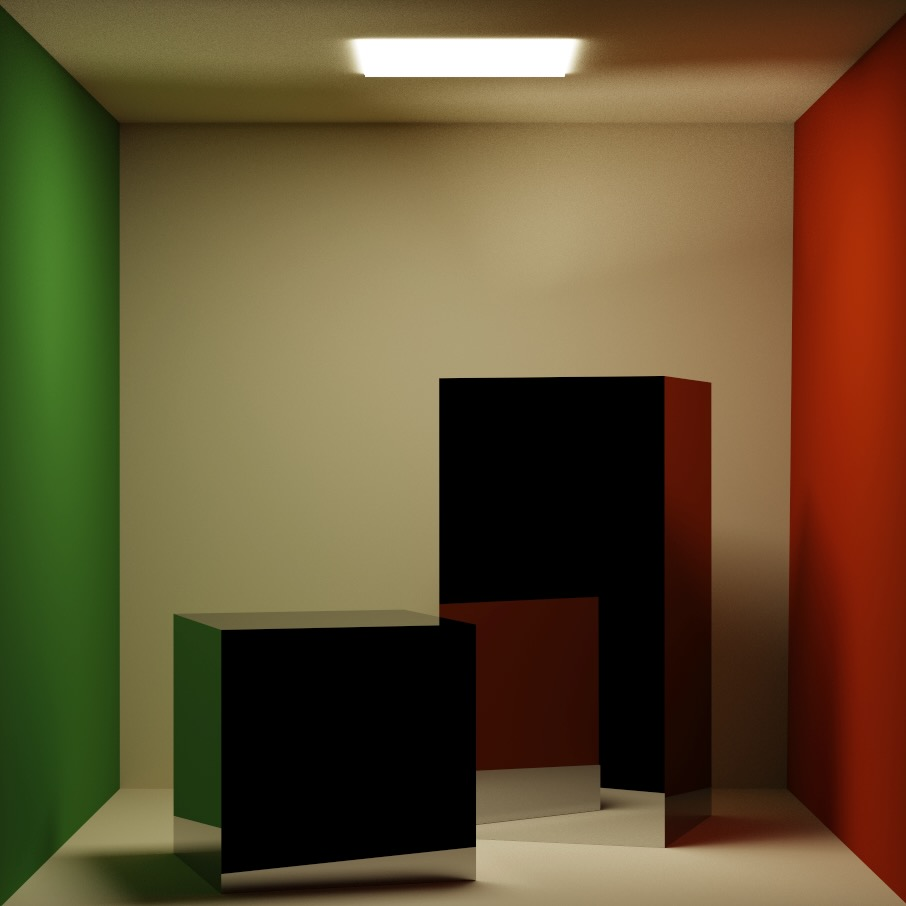
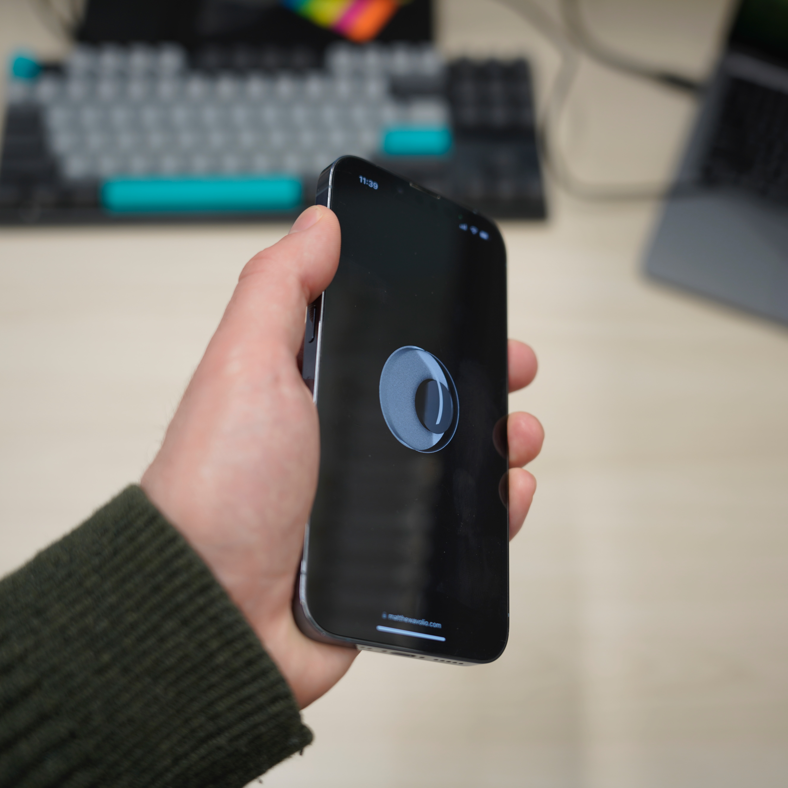

I am a Master's of Math student in Computer Science at the University of Waterloo. I study computer graphics under the supervision of Prof. Shlomi Steinberg – particularly appearance modeling and light transport. Currently my research focuses on developing practical wave-optics methods for material appearance.
I previously earned a Bachelor of Applied Science from the University of Waterloo, where I completed internships in various fields, including computer vision and genomics.

A work-in-progress toy path tracer built in C++ with Intel Embree; created as an excercise in rendering engines and data-oriented design.

A playful HCI and graphics project that uses your phone's sensors to light and alter the scene. Written with GLSL and Javascript.
Note: Only works on iPhone.
Teaching Assistantships at the University of Waterloo: